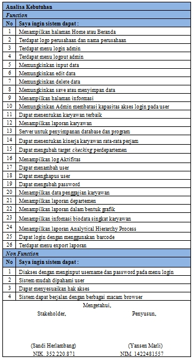
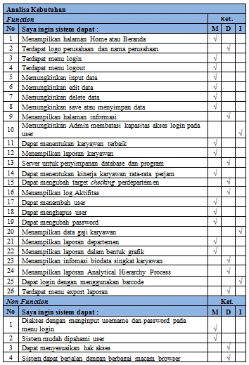
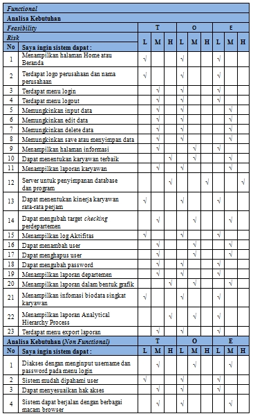
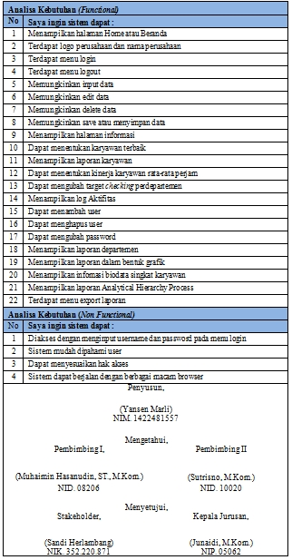

Sesungguhnya ini hanyalah catatan dari apa yang saya pelajari saat kuliah.
Saya lupa mata kuliah apa tepatnya. So, mari kita lanjutin aja yaaa…
Elisitasi adalah seperangkat data terkait kebutuhan sistem baru dari
aktivitas pengguna sistem atau stakeholder yang memiliki
keterkaitan/hubungan langsung dengan penggunaan sistem maupun dengan
pengembangan sistem. 1
Sederhananya, proses elisitasi adalah proses eliminasi terhadap
requirements dari user melalui 3 tahap dan final elisitasi.
Elisitasi Tahap 1
Berisi seluruh rancangan sistem baru yang diusulkan oleh pihak
manajemen terkait melalui proses wawancara.
Elisitasi Tahap 2
Merupakan hasil pengklasifikasian dari elisitasi tahap I berdasarkan
metode MDI. Metode MDI ini bertujuan untuk memisahkan antara rancangan
sistem yang penting dan harus ada pada sistem baru dengan rancangan
yang disanggupi oleh penulis untuk dieksekusi.
“M” pada MDI itu artinya
Mandatory (penting). Maksudnya requirement
tersebut harus ada dan tidak boleh dihilangkan pada saat membuat
sistem baru.
“D” pada MDI itu artinya Desirable. Maksudnya requirement tersebut tidak terlalu penting dan boleh
dihilangkan. Tetapi jika requirement tersebut digunakan dalam
pembuatan sistem, akan membuat sistem tersebut lebih sempurna.
“I” pada MDI itu artinya Inessential. Maksudnya bahwa requirement tersebut bukanlah bagian dari sistem
yang dibahas dan merupakan bagian dari luar sistem.
Elisitasi Tahap 3
Merupakan hasil penyusutan dari elisitasi tahap II dengancara
mengeliminasi semua requirement yang optionnya I pada metode MDI.
Selanjutnya semua requirement yang tersisa diklasifikasikan kembali
melalui metode TOE, yaitu sebagai berikut:
T artinya Technical, maksudnya bagaimana tata cara/teknik pembuatan requirement
tersebut dalam sistem yang diusulkan.
O artinya Operational, maksudnya bagaimana tata cara penggunaan requirement tersebut
dalam sistem yang akan dikembangkan.
E artinya Economy, maksudnya berapakah biaya yang diperlukan guna membangun
requirement tersebut didalam sistem.
Metode TOE tersebut dibagi kembali menjadi beberapa option, yaitu:
High (H) : Sulit untuk dikerjakan, karena
tehnik pembuatan dan pemakaiannya sulit serta biayanya mahal,
sehingga requirement tersebut harus dieliminasi.
Middle (M) : Mampu untuk dikerjakan.
Low (L) : Mudah untuk dikerjakan.
Final Draft Elisitasi
Merupakan hasil akhir yang dicapai dari suatu proses elisitasi yang
dapat digunakan sebagai dasar pembuatan suatu sistem yang akan
dikembangkan.
Biar gak bingung, mari kita lihat contohnya saja ya.
Elisitasi Tahap 1

Contoh elisitasi tahap 1
Elisitasi Tahap 2

Contoh elisitasi tahap 2
Elisitasi Tahap 3

Contoh elisitasi tahap 3
Final Draft Elisitasi

Contoh final draft elisitasi
Hasil di atas tentu belum final, karena masih sebagai Draft. Semuanya masih bisa diolah lagi, bahkan bisa berulang ke Tahap 1 lagi berdasarkan data pada Final Draft-nya.
1. Yousuf, Masooma, and M. Asger. “Comparison of Various Requirements Elicitation Techniques”. International Jurnal of Computer Applications Vol.116 No.4, April 2015 ISSN 0975-8887. ↩